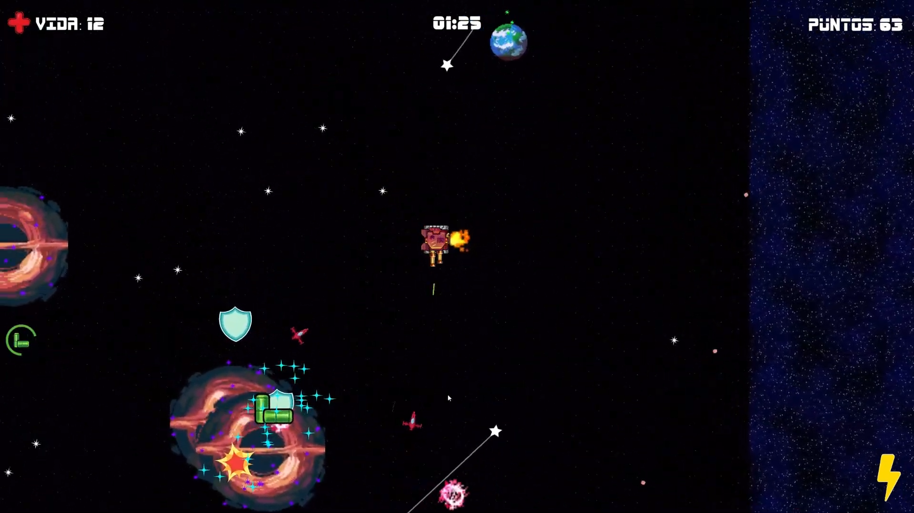

Neon Score
Neon Score es un juego 3D desarrollado en Unity. Los jugadores se encuentran en un mundo futurista con estética neón, donde deben manejar un auto y conseguir la mayor cantidad de puntos en 5 minutos.


SpaceTank
SpaceTank es un juego 2D desarrollado en Unity, donde el jugador controla un tanque espacial y debe sobrevivir a oleadas de enemigos.


Lisarthy
Lisarthy es un videojuego tipo metroidvania en 2D con un estilo gráfico vectorial bizarro.

Visita la página web del juego: Lisarthy